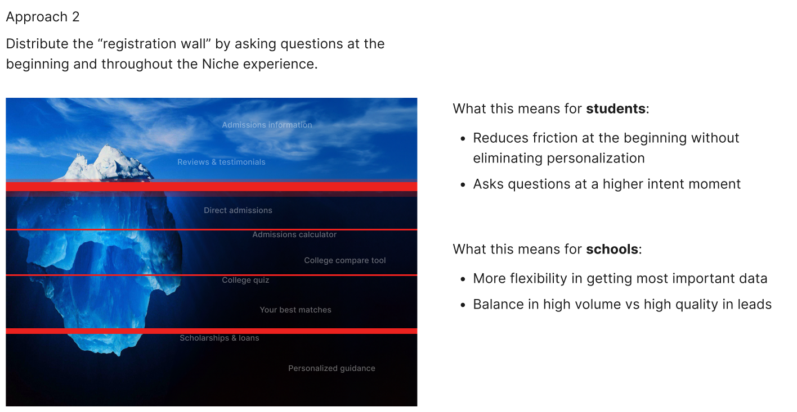
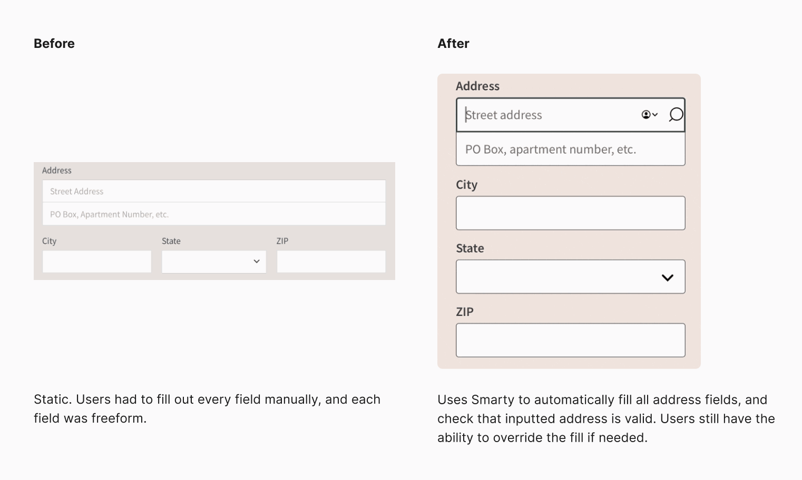
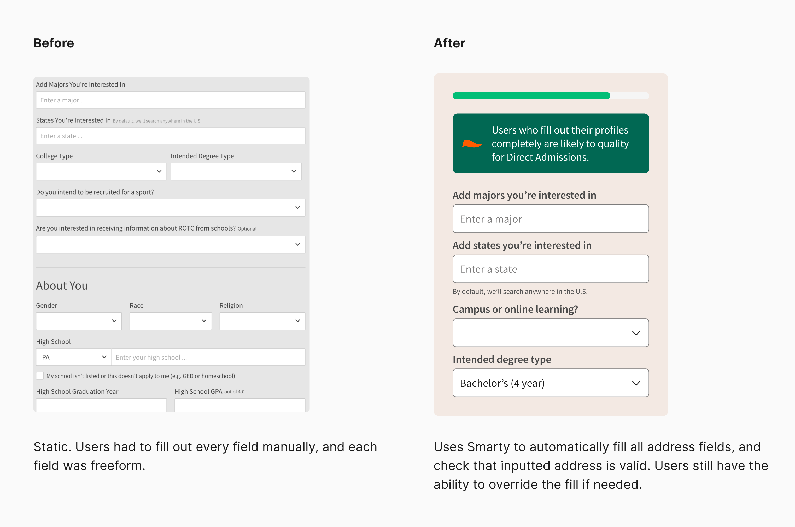
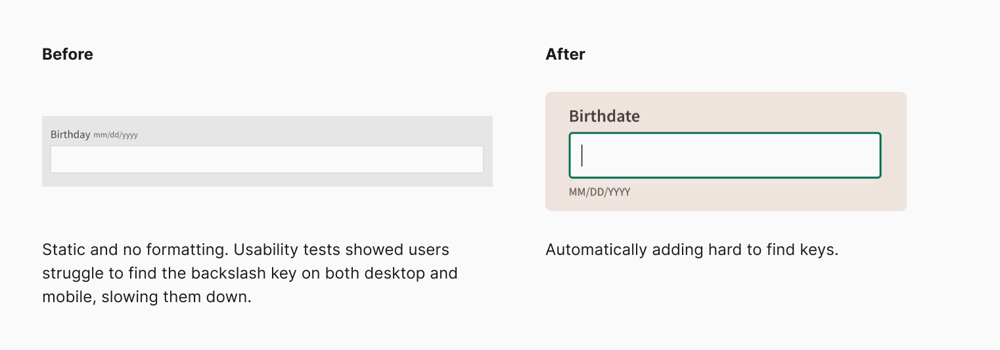
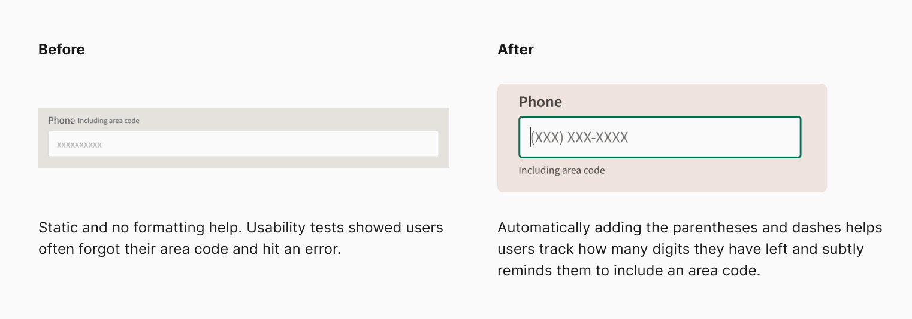

Have you signed up for a digital service recently?
In an age where we are often asked to give out personal information for simple activities like mobile ordering a taco or seeing the rest of a thread, it's easy to forget how precious personal data should be. Although it's easy to follow the trend without batting an eye, it's important to reevaluate and understand exactly what we're asking of our users.
Our registration process is lengthy, but much of it is important in tailoring the experience on Niche to the user's needs. Our prospective college students weren't making it through to finish creating their accounts, and we knew we needed to take a closer look at the problem.
Diagnosing the problem
The legacy registration flow had a number of issues that stemmed beyond it being outdated and long. In user interviews, it was clear users did not understand why they were being asked so many questions just to create an account, and similarly did not see the value that Niche would provide after account creation.
The disconnect between the services we offered and how users viewed us loomed as a much larger issue. Users saw us as a way to learn about prospective schools in a very surface level way, but their capabilities on Niche actually run much deeper.
The way our product was being used, users and schools were like ships passing in the night. There was a huge opportunity for us to better educate and connect users and schools directly, providing much needed value to both students and schools.
These offerings can potentially be life-changing to students, if we can just help them past the wall that registration was posing.
Considering our options
For users, registration was almost like an unsurmountable wall they needed to overcome, without much understanding of the benefits. For the schools we service, registration was really important because it helps us and them learn more about our users’ school searches and goals.
Providing high quality lead information to schools made up about 80% of our business at the time and anything we did could not jeopardize it.
With this in mind, we took a look at some of the ways we might attack the problem.
The biggest different in each approach was the amount and location of the friction registration was adding. As such, each also had differing impact on the user experience and the quality of the lead we would be able to provide to schools.
The first approach, where we fully eliminate the registration at the beginning, would be a nice way to fully eliminate friction. However, this was at the cost of us being able to personalize the experience to the users in any way, and would greatly reduce their user experience and the quality of the business lead.
In the second approach, we explored splitting up the information collected so that we still asked enough at the beginning, but left the rest for higher moments of intent. This way we would know enough to help them navigate their experience on Niche, but give them time to see the value of our product and reduce the early friction.
We really liked this approach, but we were not sure this was something we could do short term while maintaining the same output of business value. We ended up setting this as our longer term vision and are still working towards this state.

In our third approach, we left the registration flow all up front, but committed to improving the experience in other ways. We had discovered in the first approach that the data collection friction was not always a bad thing, and went a long way of ensuring our users were ready to tackle some amount of work while knowing enough to encourage them through.
After carefully weighing our options and evaluating existing constraints, we decided to move forward with the third approach. I was confident that we could start setting up towards the vision we laid out in the second approach without risking existing business, and that there were things I could do with the user experience in the meantime to improve completion rates in the meantime.
Final designs and results
At the end of our iterations and user testing, we landed on a quiz-like registration with UX improvements peppered throughout to help users complete account creation, while we continued our work towards the longer term vision.
Improving the connection between schools and students
One of the bigger product decisions we made was moving the contact information piece to the beginning of the experience. To us, the student and school relationship should operate as a two-way street.
A lot of our offerings are focused around creating opportunities for students and schools to communicate to each other directly. Students are eager to understand what school best suits them, and schools want to know which students are interested and why.
Our newest offering, Direct Admissions, allows us to offer immediate acceptance and a financial package to a partner school based on the user's Niche profile.
It became even more important for our users to fill out their information, as well as consent to the receiving messaging directly from schools. Without filling out their profiles, they would not qualify for a great opportunity. Without consenting to messages, they would never hear about the great opportunity.
By doing so, we were able to collect what we (and the schools) considered most important data first, as well as unlock the ability to more intelligently fill consent decisions based on where the user was located.
This improved our consent rates from 85.7% to 97.2% and gave us certainty that users weren't missing out on major opportunities.
Usability improvements
A deeper dive into a few of the changes I made.

This not only reduced the time spent by an average of 5 seconds, but also reduced unmailable addresses by 45%.

This let us convey to users in real time better understanding of the value they could hope to gain. This was part of the solution to the issue we had identified early on about users not understanding why they should create a Niche account.

This reduced time spent as well as eliminated potential friction and stress.

An added benefit of this work was that all phone numbers were now formatted the same, contributing to our data cleanliness.
Lessons learned and looking ahead
With our work we were able to improve completion rates by 13% and decrease time spent by over 15 seconds per user.
While we were thrilled with the results we achieved, I am most excited about what this work begins to unlock. Although we have significantly improved the user experience of the flow, the flow is still long and probing. We can now start to explore some of the scenarios we had considered in the vision we earlier set.
Alongside that discovery, we are also starting to take a closer look at what we can improve on the business front as well.
I really believe this is the beginning of work that can change the landscape of our business and higher education at large. I would love to explore how this pool of users we have amassed might play into a "community" aspect. Niche could serve as a way to connect not only schools and students but also like-minded individuals also navigating a complex chapter of life.
There are a ton of avenues left for us to explore now that we've taken the first step, and I'm looking forward to taking on some of those challenges next.